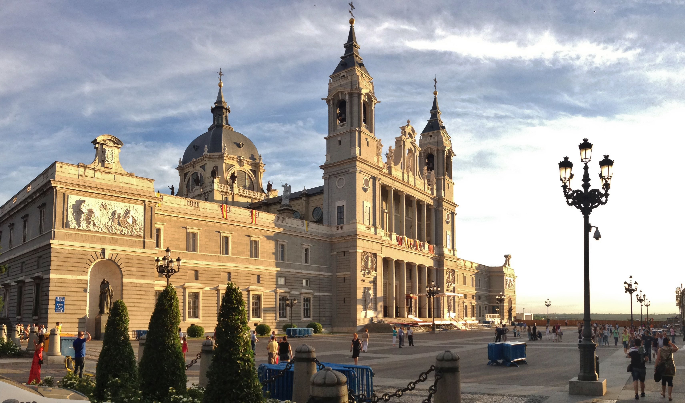

Tarih
Manzanares Nehri'ne bakan kayalık bir çıkıntı üzerinde kurulu Alhazar'ın çevresinde gelişen şehirden 932 tarihli kayıtlarda Arapça "su kanalı" anlamına gelen Macerit adıyla bahsedilir. 1083 yılında şehir Müslümanlar'dan Kastilya Krallığı'na geçti. Alhazar'ın 1466'daki depremde yıkılmasından sonra inşa edilen Orta Çağ kraliyet sarayı, şehrin gelişmesine yeni bir hız kazandırdı. 1561'de Kral Hristiyan II. Felipe İspanya'nın merkezinde olduğu için şehri başkent yapmayı uygun buldu. 1759-1788 arasındaki III. Carlos döneminde geniş cadde ve meydanların açılmasıyla planlı bir gelişme başladı. Napolyon Savaşları (1800-1815) sırasında Fransız işgali altına giren Madrid, Joseph Bonaparte'in tahta geçmesinden sonra başlayan millî ayaklanmada öncü bir rol oynadı. On dokuzuncu yüzyılın ikinci yarısında şehre modern bir görünüm kazandıran planlı bir yapılaşma başladı. İspanya İç Savaşı (1936-1939) sırasında ağır bombardımanlara maruz kalan Madrid büyük bir yıkıma uğradı. Ancak bundan sonra geniş çaplı bir onarım dönemi başladı. Şehrin gelişmesi zamanla çevredeki banliyöleri de içine aldı. 1960'lardaki değişimlerde tarihi mirasa ağır darbeler indirilmekle beraber, sonraki yıllarda tarihi yapıları koruma tedbirleri alındı.